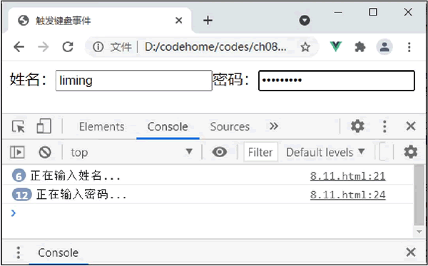
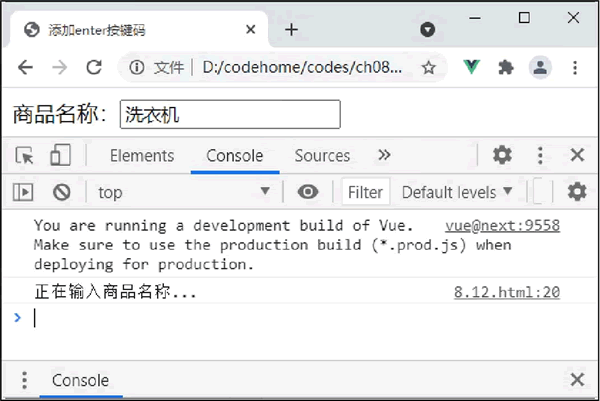

首页 > 编程笔记
Vue按键修饰符（keydown、keyup和keypress）
在 Vue 中，可以使用以下 3 种键盘事件：
在日常的页面交互中，经常会遇到这种需求，例如用户输入账号和密码后按 Enter 键，以及一个多选筛选条件，通过单击多选框后自动加载符合选中条件的数据。在传统的前端开发中，碰到这种类似的需求时，往往需要知道 JavaScript 中需要监听的按键所对应的 keyCode，然后通过判断 keyCode 得知用户按下了哪个按键，继而执行后续的操作。
在浏览器中运行，打开控制台，然后在输入框中输入姓名和密码。可以发现，每次输入时，都会调用对应的方法打印内容，如下图所示。
Vue 提供了一种便利的方式来实现监听按键事件。在监听键盘事件时，经常需要查找常见的按键所对应的 keyCode，而 Vue 为常用的按键提供了绝大多数常用的按键码的别名：
例如，修改上面的示例，在 keyup 事件后添加 Enter 按键码。
- keydown：键盘按键按下时触发。
- keyup：键盘按键抬起时触发。
- keypress：键盘按键按下和抬起间隔期间触发。
在日常的页面交互中，经常会遇到这种需求，例如用户输入账号和密码后按 Enter 键，以及一个多选筛选条件，通过单击多选框后自动加载符合选中条件的数据。在传统的前端开发中，碰到这种类似的需求时，往往需要知道 JavaScript 中需要监听的按键所对应的 keyCode，然后通过判断 keyCode 得知用户按下了哪个按键，继而执行后续的操作。
下面来看一个示例，当触发键盘事件时，调用一个方法。keyCode 返回 keypress、keydown、keyup 事件触发的键值的字符代码。
<div id="app">
<label for="name">姓名：</label>
<input v-on:keyup="name" type="text" id="name">
<label for="pass">密码：</label>
<input v-on:keyup="password" type="password" id="pass">
</div>
<!--引入Vue文件-->
<script src="https://unpkg.com/vue@next"></script>
<script>
//创建一个应用程序实例
const vm= Vue.createApp({
methods: {
name:function(){
console.log("正在输入姓名...")
},
password:function(){
console.log("正在输入密码...")
}
}
//在指定的DOM元素上装载应用程序实例的根组件
}).mount('#app');
</script>
在这个示例中，为两个 input 输入框绑定 keyup 事件，用键盘在输入框输入内容时触发，每次输入内容都会触发并调用 name 或 password 方法。在浏览器中运行，打开控制台，然后在输入框中输入姓名和密码。可以发现，每次输入时，都会调用对应的方法打印内容，如下图所示。

图 1 每次输入内容都会触发
图 1 每次输入内容都会触发
Vue 提供了一种便利的方式来实现监听按键事件。在监听键盘事件时，经常需要查找常见的按键所对应的 keyCode，而 Vue 为常用的按键提供了绝大多数常用的按键码的别名：
.enter
.tab
.delete (捕获“删除”和“退格”键)
.esc
.space
.up
.down
.left
.right
例如，修改上面的示例，在 keyup 事件后添加 Enter 按键码。
<div id="app">
<label for="name">商品名称：</label>
<input v-on:keyup.enter="name" type="text" id="name">
</div>
<!--引入Vue文件-->
<script src="https://unpkg.com/vue@next"></script>
<script>
//创建一个应用程序实例
const vm= Vue.createApp({
methods: {
name:function(){
console.log("正在输入商品名称...")
}
}
//在指定的DOM元素上装载应用程序实例的根组件
}).mount('#app');
</script>
在 Chrome 浏览器中运行程序，在 input 输入框中输入姓名“洗衣机”，然后按 Enter 键，弹起后触发 keyup 方法，打印“正在输入商品名称…”，效果如下图所示。

图 2 按Enter键并弹起时触发
图 2 按Enter键并弹起时触发
关注公众号「站长严长生」，在手机上阅读所有教程，随时随地都能学习。内含一款搜索神器，免费下载全网书籍和视频。

微信扫码关注公众号